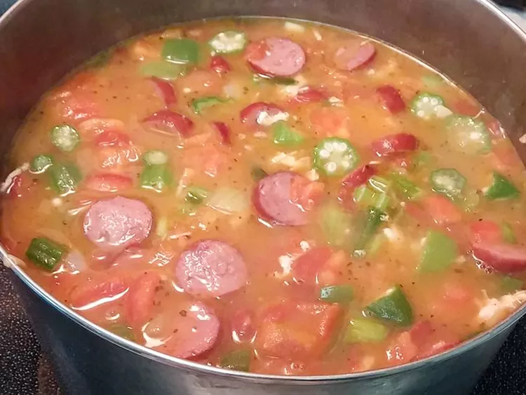

Gumbo
Home

Here is a recipe for a delicious pot of gumbo that is great for any weather, but especially for those cold
weather months
Ingredients
- 1 Whole Chicken
- 1/2 cup all-purpose flour
- 1/2 cup vegetable oil
- 1 green bell pepper
- 5 stalks celery, finely chopped
- 1 tablespoon Cajun seasoning
- 2 whole bay leaves
- 1 can diced tomatoes
- 1 pack of beef sausage, sliced
- 10 oz sliced okra
- salt and black pepper
Directions
- Fill a large pot partially with lightly salted water, and place the chicken in the pot. Bring to a boil,
reduce the heat to a simmer, and cook the chicken until the meat is no longer pink and the juices run clear,
about 1 hour. Remove the chicken from the broth, and crack open the carcass to allow the chicken to cool.
Reserve the chicken broth. After the chicken has cooled enough to handle, pick the meat from the bones, and
set aside.
- While the chicken is simmering, make a roux by whisking together the flour and vegetable oil in a large,
heavy saucepan over medium-low heat. Cook and stir the mixture, watching constantly to avoid burning, until
the roux is a rich chocolate brown color, 20 to 30 minutes.
- As soon as the roux has reached the desired color, stir in the onions, bell peppers, celery, Cajun
seasoning, and bay leaves, and simmer, stirring occasionally, until the vegetables are tender, about 45
minutes. Pour in the reserved chicken broth, diced tomatoes, and beef sausage, and simmer, stirring
occasionally, until the mixture has thickened, about 1 hour.
- Mix in the reserved chicken meat and okra, bring back to a simmer, and cook, stirring occasionally, until
the okra is tender and the flavors have blended, 30 to 40 minutes.